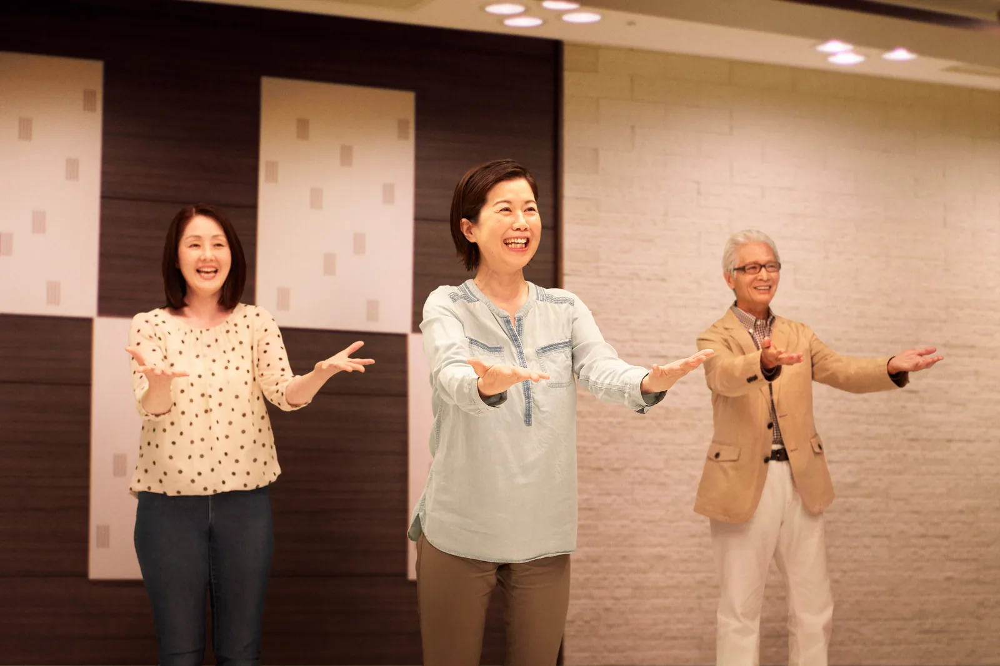
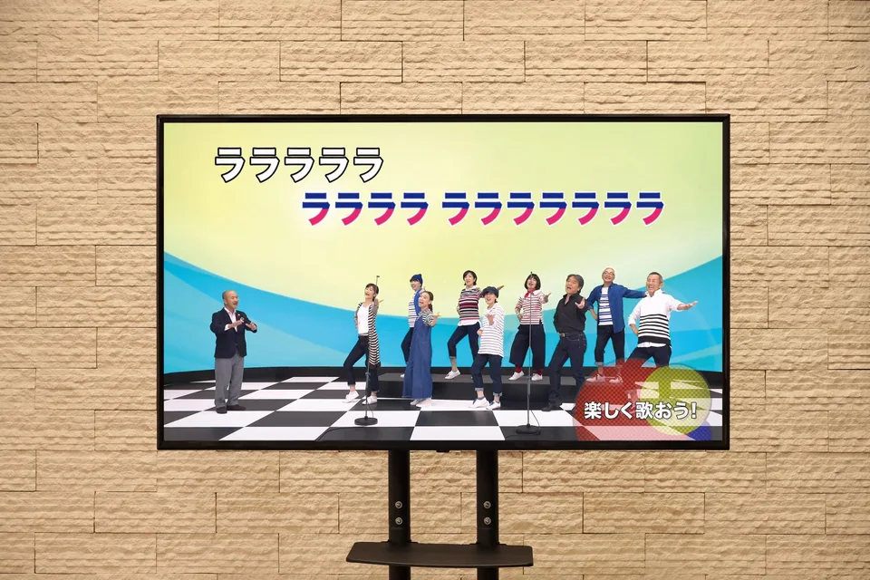
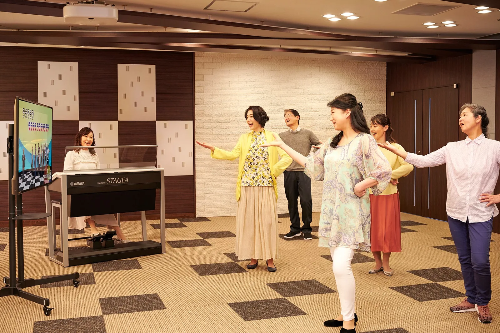

ゆっくり、声を出す準備。
体をほぐす。
まずは深呼吸。肩の力を抜いて、少しずつ声と体を動かしていきます。
大津わにセンターJR和邇駅すぐ
無料体験・見学大人のための、歌の時間。
懐かしい昭和歌謡を、仲間と歌う。
軽く動いて、思わず笑う。
月に二度、水曜の午後を楽しみに。
10/7・10/21・11/11・11/25（水）
13:00〜14:30 ｜ 大津わにセンター

※掲載写真はヤマハ青春ポップスのイメージです。
大津わにセンターの実際の教室・在籍者の写真ではありません。
口ずさむと、思い出す。
仕事、子育て、家のこと。
忙しい毎日の中で、少し遠ざかっていた「好きな歌」。
青春ポップスは、その歌をもう一度、仲間と楽しむ時間です。懐かしいメロディーに声を重ねて、簡単なステップを添えて。
上手に歌うためだけでなく、
歌う時間そのものを、私の楽しみに。
ゆっくり、声を出す準備。
まずは深呼吸。肩の力を抜いて、少しずつ声と体を動かしていきます。
歌詞も、ふりつけも、映像で。
映像があるから、楽譜を追う必要はありません。歌詞やハモリ、簡単なふりつけを見ながら楽しみます。

ひとりの声が、みんなの声に。
エレクトーンの伴奏に合わせて、声を重ねる。ひとりで口ずさむのとは違う楽しさを、教室で。
03 / TAKE A LOOK
言葉だけでは伝わらない雰囲気を、
ヤマハの紹介動画でご覧ください。

YAMAHA SEISHUN POPSヤマハ青春ポップスの紹介映像です。大津わにセンターの実際のレッスン映像ではありません。再生時の音量にご注意ください。YouTubeで見る ↗
04 / YOUR FIRST DAY
2026年10月・11月
無料体験・見学受付中
各日 13:00〜14:30
ご希望日を選ぶと、
申込みフォームへ進みます。
送信後、担当者からご連絡して日時を確認します。
フォームの送信だけでは予約は確定しません。
05 / OUR CLASSROOM
大津わにセンターで、
無理なく続ける歌の時間を。
入会金（税込）2,200円
月会費（税込）4,070円
体験・見学は無料です。教室の雰囲気を確かめてから、入会をご検討いただけます。
06 / A LITTLE REASSURANCE
上手に歌うことだけを目指す教室ではありません。映像を見ながら声を重ねて、仲間と歌う楽しさを大切にしています。まずは見学からでもどうぞ。
できるところだけで構いません。座ったままの参加もできます。気になることがあれば、申込み時にご相談ください。
おひとりで参加される方もいらっしゃいます。初めての方も、まずは体験・見学で教室の雰囲気をご覧ください。
このフォームは体験・見学のお申し込みです。送信だけで入会は確定しません。担当者からご連絡し、参加日時を確認します。
07 / LET'S SING TOGETHER
無料体験・見学のお申し込み
ご希望をお送りください。
担当者からご連絡し、参加日時を確認します。
10:30〜19:30／月曜定休
受付：株式会社トリイ